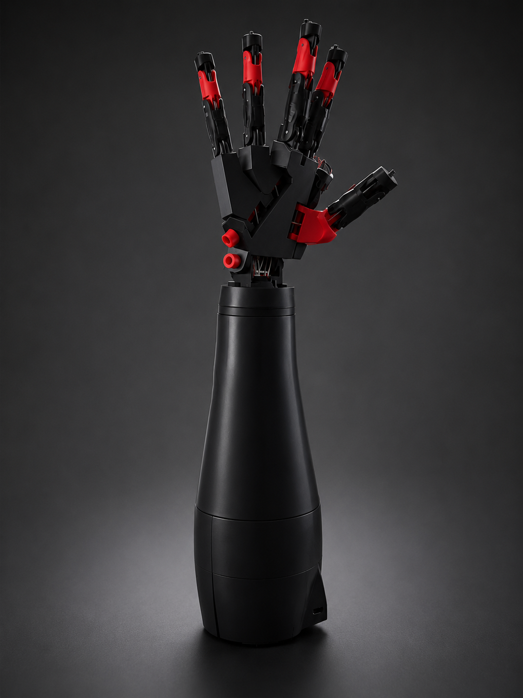
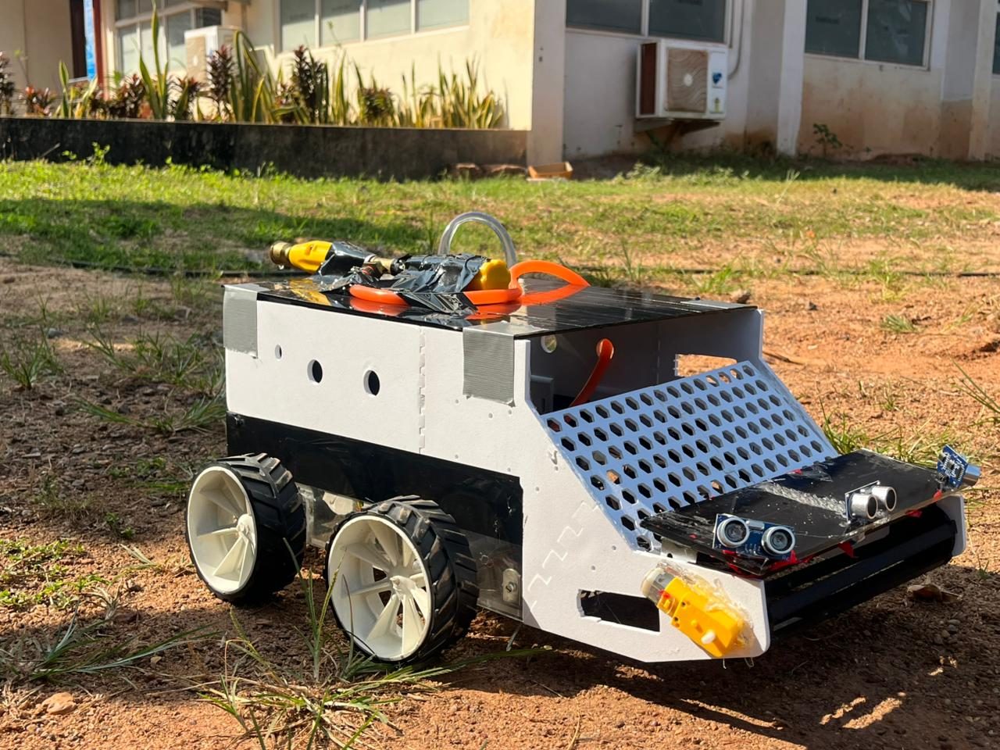

About Me
Hello! I'm Akshay V Shetty, a 4th Year Engineering Student at Sahyadri College of Engineering & Management.
I have a deep passion for the intersection of hardware and software. My work focuses on building intuitive, real-time control systems that allow humans to interact naturally with machines.
When I'm not coding or wiring up Arduino boards, I'm constantly exploring new ways to push the boundaries of robotics, computer vision, and embedded systems.
Featured Projects

Dual-Mode Gesture-Controlled Robotic Hand
A complete hardware and software system that enables natural human-computer interaction by capturing hand gestures and translating them into robotic finger movements.
Key Features:
- Dual-Mode Control: Seamlessly toggle between a webcam (MediaPipe) and a custom wireless flex-sensor glove (nRF24L01).
- Digital Twin: Real-time physics-based simulation using MuJoCo that mirrors the physical hardware.
- Hardware Execution: Custom-built 3D printed arm controlled by Arduino Nanos and servos with joint-level kinematics.

Automated Seed Dispensing Robot
A compact, mobile robotic system designed to automate seed planting and irrigation for small-scale farms, aligning with the SDG Goal 2: Zero Hunger.
Key Features:
- Precision Sowing: Custom motorized dispensing mechanism ensures seeds are placed at optimal spacing and depth.
- Integrated Irrigation: Equipped with an onboard 12V water pump to immediately hydrate seeds upon planting for better germination.
- Autonomous Navigation: Uses an ESP32 microcontroller paired with ultrasonic sensors to avoid obstacles in real-time on uneven terrain.
My Experience
Robotics Intern
Technical Career Education
Jan 2026 - May 2026Specialized in 3D modeling and mechanical design using SOLIDWORKS and Autodesk Fusion 360.
Team Challengers
Mangaluru, Karnataka, India
Mar 2024 - Nov 2025Head of Events (Jul 2025 - Nov 2025): Successfully led Aerophilia 2025. Coordinated, managed, and executed the entire event demonstrating strong leadership and team management.
Media and Marketing Lead (Nov 2024 - Nov 2025): Managed media content using Adobe Premiere Pro and cinematography.
Robotics Team Member (Mar 2024 - Nov 2025): Involved in robotics, 3D modeling, and aeromodelling.
Event Media & Marketing Lead
Sahyadri College of Engineering & Management (SSTH 2024)
Aug 2024 - Nov 2024Created effective content to reach required audiences and managed different steps of conducting the SSTH event. Interacted with students through ideation sessions.
Student Mentoring and Event Management
Sahyadri College of Engineering & Management (SSTH 2022)
Sep 2022 - Nov 2022Mentored school and college students on project development and transforming ideas into tangible products. Took the lead in the decoration department for the three-day science fair.
Get In Touch
I'm currently looking for new opportunities to build cool things at the intersection of hardware and software.